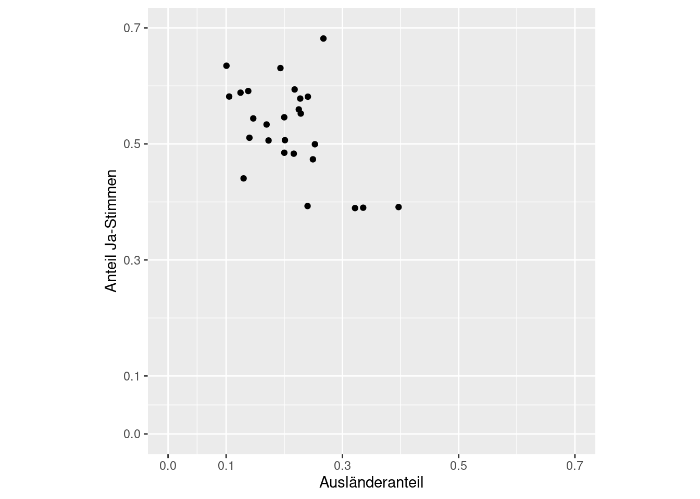
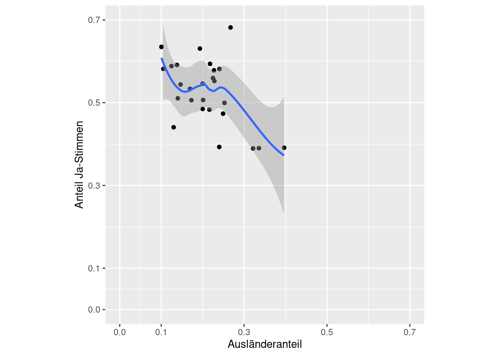
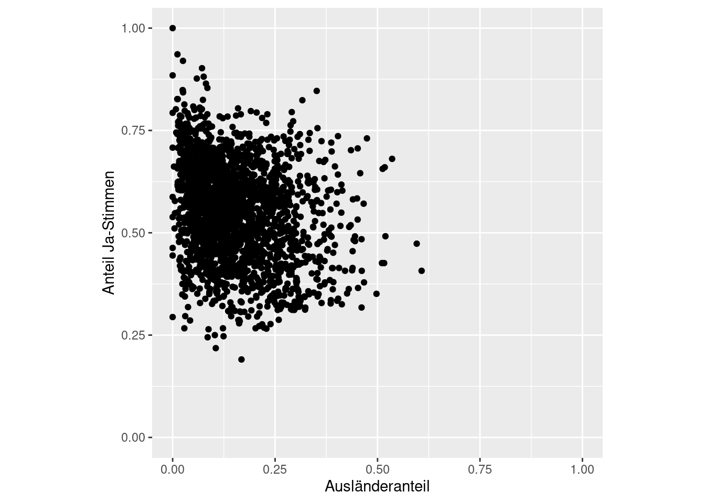
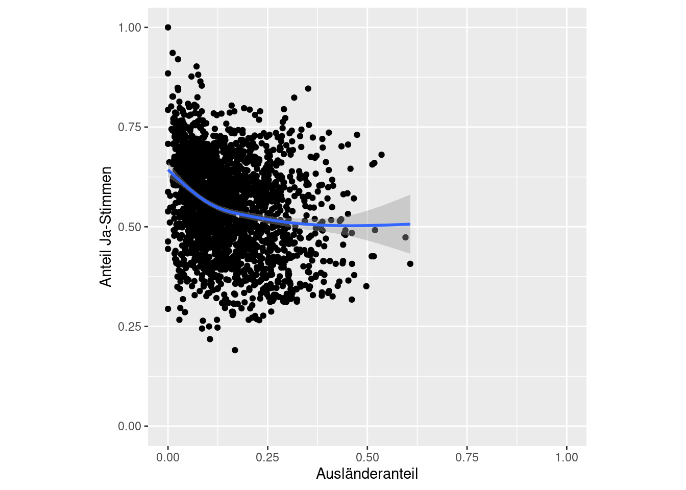
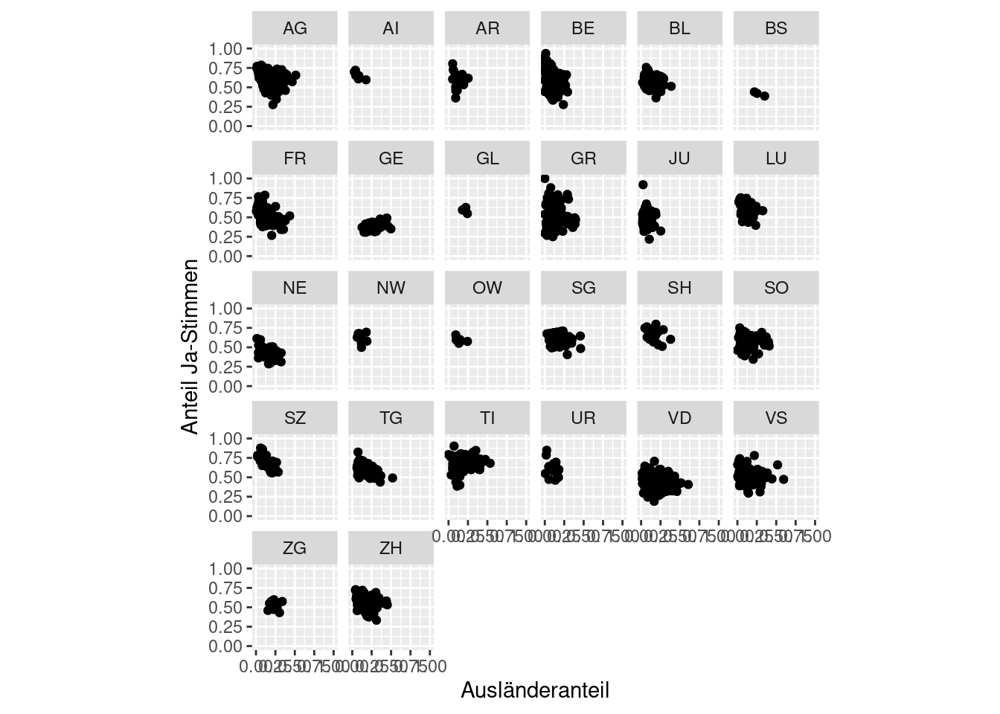
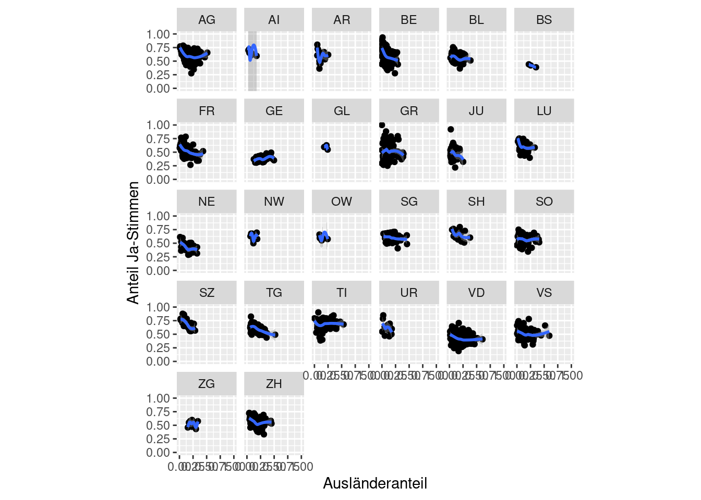
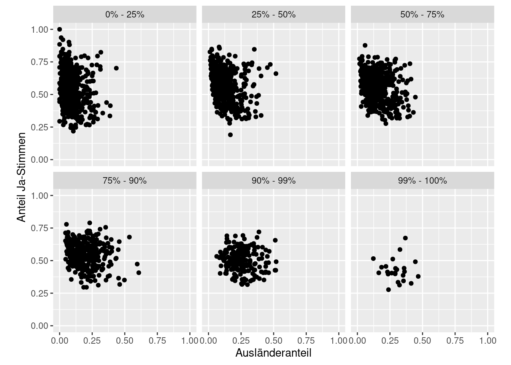
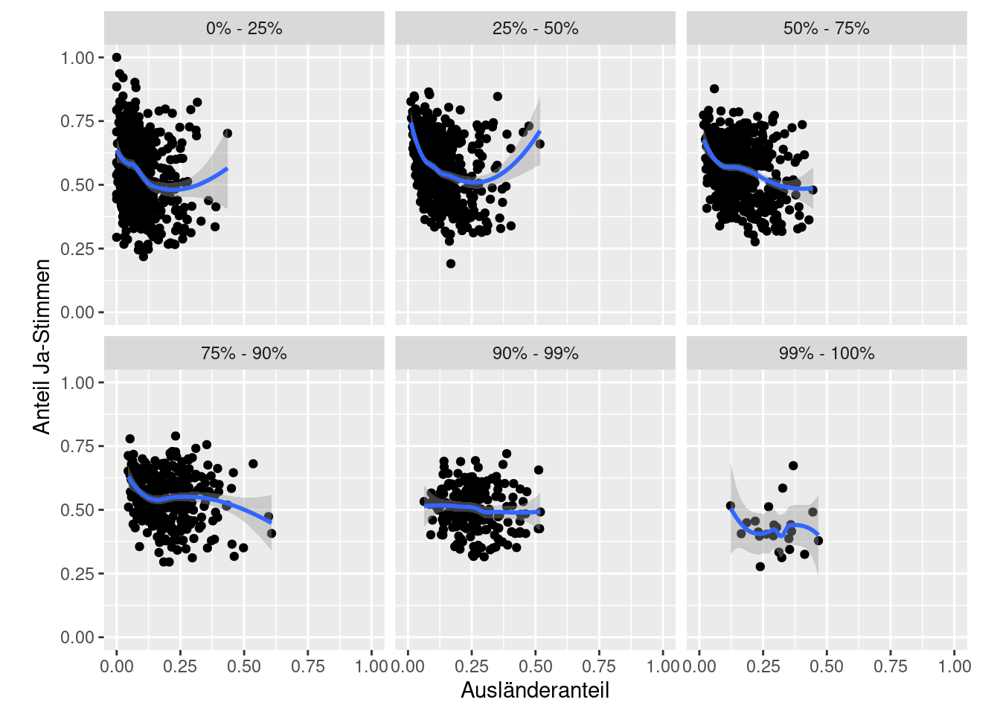

Infovis 1: Übung
In dieser Übung geht es darum, die Grafiken aus dem Blog-post Kovic (2014) zu rekonstruieren. Schau dir die Grafiken in dem Blogpost durch. Freundlicherweise wurden im Blogbeitrag die ggplot2 Standardeinstellungen benutzt, was die Rekonstruktion relativ einfach macht. Die Links im Text verweisen auf die Originalgrafik, die eingebetteten Plots sind meine eigenen Rekonstruktionen.
Importiere als erstes den Datensatz initiative_masseneinwanderung_kanton.csv (dieser ist auch auf der Blog-Seite verfügbar).
Aufgabe 1
Rekonstruiere Grafik 1 (Kovic 2014). Erstelle dazu einen Scatterplot wo der Ausländeranteil der Kantone dem Ja-Anteil gegenüber gestellt wird. Speichere den Plot einer Variabel plot1.
{kind=link}
- nutze
ggplot(kanton, aes(auslanderanteil, ja_anteil))um den ggplot zu initiieren. Füge danach ein einen Punkte Layer hinzu (geom_point()) - nutze
coord_fixed()um die beiden Achsen in ein fixes Verhältnis zu setzen (1:1). - Optional:
- setze die Achsen Start- und Endwerte mittels
scale_y_continuousbzw.scale_x_continuous. - Setze analog Kovic (2014) die
breaks(0.0, 0.1…0.7) manuell (innerhalbscale_*_continuous)
- setze die Achsen Start- und Endwerte mittels
Rekonstruktion:

Aufgabe 2
Rekonstruiere Grafik 2. Erweitere dazu plot1 mit einer Trendlinie.
{kind=link}

Aufgabe 3
Importiere die Gemeindedaten initiative_masseneinwanderung_gemeinde.csv. Rekonstruiere danach Grafik 3 indem du den Ausländeranteil aller Gemeinden dem Ja-Stimmen-Anteil gegenüber. Speichere den Plot als plot2.
{kind=link}

Aufgabe 4
Rekonstruiere Grafik 4 indem plot2 mit einer Trendlinie erweitert wird.
{kind=link}

Aufgabe 5
Rekonstruiere Grafik 5 indem plot2 mit facetting erweitert wird. Die Facets sollen die einzelnen Kantone sein. Speichere den Plot als plot3.
{kind=link}

Aufgabe 6
Rekonstruiere Grafik 6 indem plot3 mit einer Trendlinie erweitert wird.
{kind=link}
Rekonstruktion:

Aufgabe 7
Rekonstruiere Grafik 7 indem plot2mit facetting erweitert wird. Die Facets sollen nun den Grössen-Quantilen entsprechen. Speichere den Plot unter plot4.
{kind=link}
Rekonstruktion:

Aufgabe 8
Rekonstruiere Grafik 8 indem plot4 mit einer Trendlinie ausgestattet wird.
{kind=link}

Aufgabe 9 (Optional, fortgeschritten)
Rekonstruiere die Korrelationstabelle.
Tipp: - Nutze group_by() und summarise() - Nutze cor.test() um den Korrelationskoeffizienten sowie den p-Wert zu erhalten. - Mit $estimate und $p.value können die entsprechenden Werte direkt angesprochen werden
Hinweis: aus bisher unerklärlichen Gründen weiche gewisse meiner Werte leicht von den Berechnungen aus Kovic (2014) ab.
| kanton | Korr.Koeffizient | Signifikanz |
|---|---|---|
| AG | -0.2362552 | *** |
| AI | -0.7828022 | - |
| AR | -0.0892817 | - |
| BE | -0.4422003 | *** |
| BL | -0.2919712 | ** |
| BS | -0.9935385 | - |
| FR | -0.4217634 | *** |
| GE | 0.3753004 | * |
| GL | -0.4070120 | - |
| GR | -0.0426607 | - |
| JU | -0.2252540 | - |
| LU | -0.3048455 | ** |
| NE | -0.5214180 | *** |
| NW | -0.2018174 | - |
| OW | -0.4813090 | - |
| SG | -0.2449093 | * |
| SH | -0.2995527 | - |
| SO | -0.0533442 | - |
| SZ | -0.7259276 | *** |
| TG | -0.5522862 | *** |
| TI | 0.1512509 | - |
| UR | -0.3848167 | - |
| VD | -0.2685301 | *** |
| VS | -0.1736954 | * |
| ZG | 0.0407166 | - |
| ZH | -0.2744683 | *** |